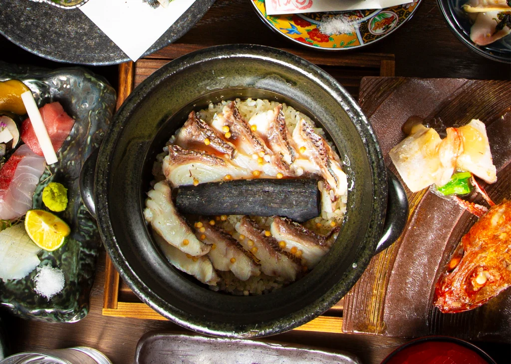

お造りと旬魚の原始焼が揃う「オールインクルーシブコース」のご案内
いつも「錦糸町 炭火 成る」をご利用いただき、誠にありがとうございます。
「オールインクルーシブコース」のご紹介です。
先付椀、前菜、お造り、炭火野菜、揚物、旬魚の原始焼、お食事、甘味まで揃う内容となっております。
大切な方とのお食事や接待・会食にもおすすめです。
ご予約・お問い合わせはお気軽にどうぞ。
皆さまのご来店をお待ちしております！
※画像はイメージです。

いつも「錦糸町 炭火 成る」をご利用いただき、誠にありがとうございます。
「オールインクルーシブコース」のご紹介です。
先付椀、前菜、お造り、炭火野菜、揚物、旬魚の原始焼、お食事、甘味まで揃う内容となっております。
大切な方とのお食事や接待・会食にもおすすめです。
ご予約・お問い合わせはお気軽にどうぞ。
皆さまのご来店をお待ちしております！
※画像はイメージです。
いつも「錦糸町 炭火 成る」をご利用いただき誠にありがとうございます。
休業期間中はご不便をおかけいたしましたが、このたび当店は営業を再開いたしました！
また再開にあたり、新コースをご用意しております。
■【ドリンク込み】オールインクルーシブコース 16,000円(税込)
豊洲直送の鮮魚を職人が炭火で丁寧に焼き上げ、素材の旨味を引き出す火入れと、季節を映す構成で、五感に響く時間をお届けいたします。
締めは土鍋で炊き上げるご飯。炊き立てならではの香りと甘みを、最後の一口までご堪能ください。
新しくなった「錦糸町 炭火 成る」にて、皆様のご来店をスタッフ一同、心よりお待ちしております。
※画像はイメージです。

いつも「錦糸町 炭火 成る」をご利用いただき誠にありがとうございます。
誠に勝手ながら、当店は「2026年2月中旬頃まで休業」とさせていただきます。
お客様にはご不便をおかけし恐縮ではございますが、
何卒ご理解賜りますようお願い申し上げます。
今後とも、「錦糸町 炭火 成る」を何卒よろしくお願いいたします。